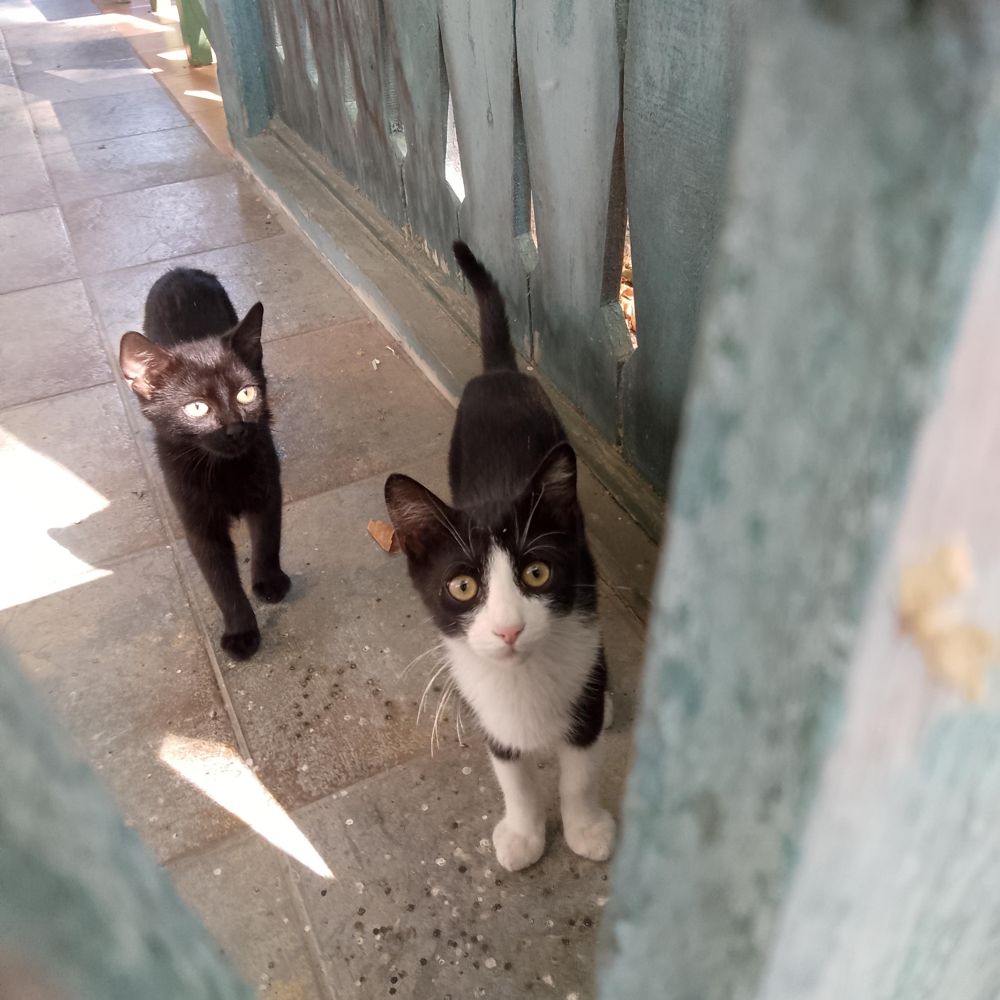

Meine Berufung:
noch keine
Meine Hobbys:
-
Lesen
-
Sport: Wandern, Fahrrad fahren, Bouldern, Pilates
-
Lernen
-
und natürlich mit Katzen spielen

Meine Ziele:
-
Peaks of the Balkans - 10 Tägige Rundwanderung in den Bergen von Albanien-Montenegro-Kosovo
-
Diese Weiterbildung fertig machen
-
Arbeit finden
Links zum Thema Peaks of the Balkans: